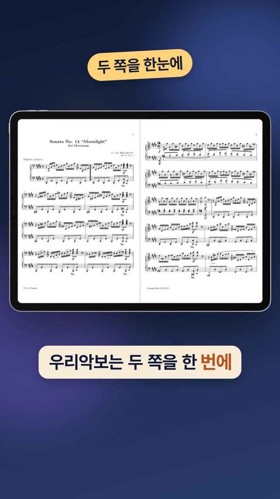
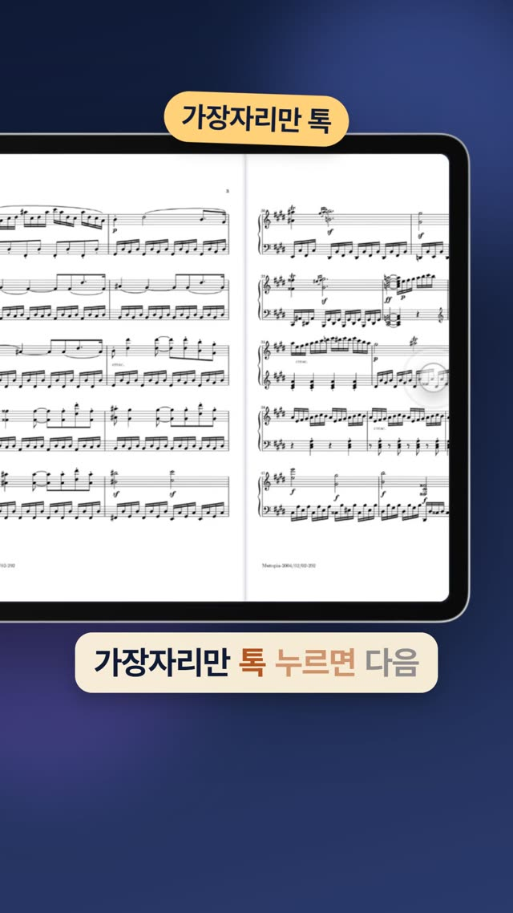

아이패드에서 악보 두 쪽을 한눈에 보고 넘기기
악보를 넘기는 순간 다음 줄이 보이지 않으면 조마조마합니다. 종이 악보처럼 두 쪽을 펼쳐 두면 넘기기 전에 다음 줄을 미리 볼 수 있습니다.
사용법
1. 두 쪽 보기로 펼치기
아이패드를 가로로 두면 악보 두 쪽이 나란히 보입니다.

2. 가장자리를 탭해서 넘기기
화면 오른쪽 가장자리를 한 번 탭하면 다음 두 쪽으로 넘어갑니다. 왼쪽 가장자리는 이전 쪽입니다.

3. 밀어서 넘기기
손가락으로 옆으로 밀어도 넘어갑니다. 연주 중에는 편한 쪽을 쓰면 됩니다.
화면은 시뮬레이터에서 실제 앱을 조작해 녹화한 것입니다. 손가락 표시는 누른 위치를 보여 주는 그래픽입니다.